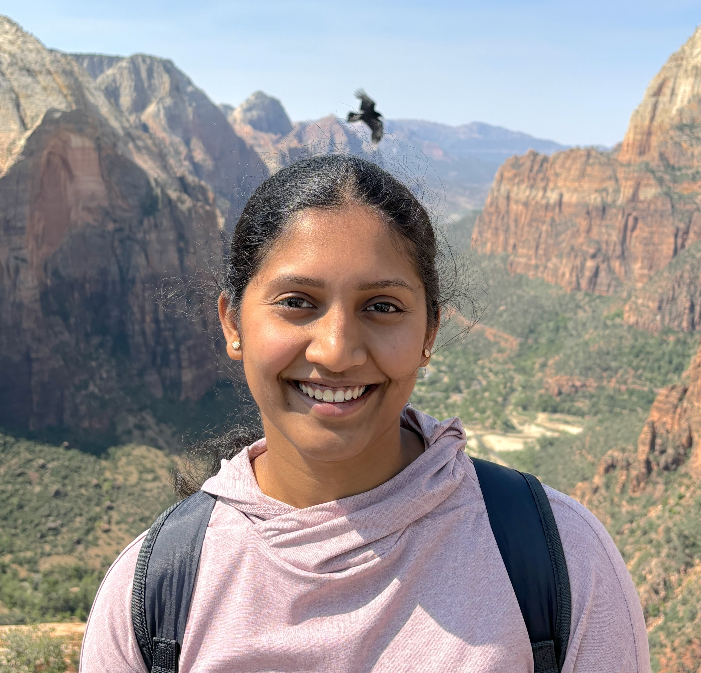

A11y-CUA Dataset: Characterizing the Accessibility Gap in Computer Use Agents
CHI 2026
I am a 2nd year PhD student advised by Dr. Amy Pavel at the Department of EECS at UC Berkeley.
My research focuses on designing new interactions for accessible computer use to improve human-AI collaboration.
I received my Master's
in Human-Computer Interaction from the School of Information at UT Austin and Bachelor's in Information Science and Engineering from RV College of Engineering, Bengaluru.

* indicates equal contribution, † indicates equal supervision
A11y-CUA Dataset: Characterizing the Accessibility Gap in Computer Use Agents
CHI 2026

Task Mode: Dynamic Filtering for Task-Specific Web Navigation using LLMs
ASSETS 2025

Context-Aware Image Descriptions for Web Accessibility
ASSETS 2024